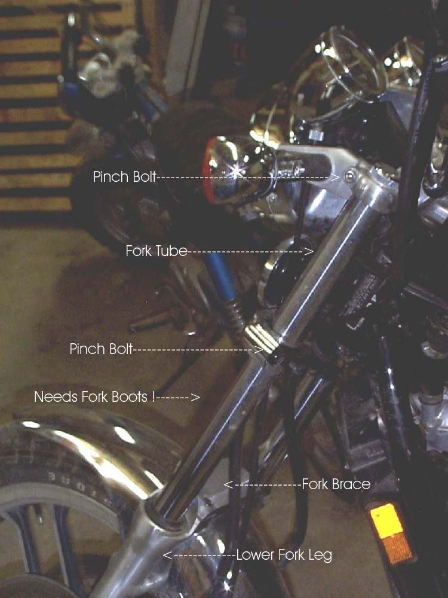
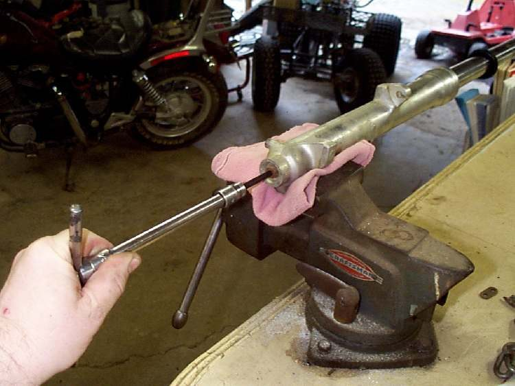

The forks need a push before they start to move, then jump, or they move unevenly and do not return smoothly. This is called stiction. The two legs are fighting each other (twisted in the clamps or not parallel at the axle), a tube is bent, the seals or bushes are dry, dirty or worn, or the oil is old and dirty.
Is it safe to ride?
Ride with care. A sticking fork does not follow bumps well and can lose front grip. If a tube is bent, do not ride.
Quick checks first
- Hold the front brake and push the bars down several times. Is the movement smooth?
- Look along each tube: straight?
- Are both legs at the same height in the top clamp?
- Was the front wheel removed, or the bike dropped, recently?
Diagnose it step by step
1Was the front wheel recently removed or refitted?
- Yes: the legs may be clamped on the axle out of parallel. Loosen the axle pinch bolts and axle, pump the forks with the brake on, and retighten in order, as in Align the front wheel, forks and handlebar.
- No: go to step 2.
2Is a fork tube visibly bent, or are the legs at different heights?
- Bent: do not ride. Workshop. See Fork legs are twisted or uneven.
- Different heights only: set them equal with Align the front wheel, forks and handlebar. The K-Light 125 manual sets the inner tube top flush with the top clamp.
- Neither: go to step 3.
3Are the bars straight with the wheel?
- No: forks twisted in the clamps. Align the front wheel, forks and handlebar.
- Yes: go to step 4.
4Are the dust seals dry, cracked or packed with dirt?
- Yes: clean with Clean fork seals. Torn dust seals let dirt reach the oil seal and bushes; replace them.
- No: go to step 5.
5Is the fork oil old (never changed) or are the bushes worn (front clunk)?
- Yes: Replace fork oil and seals; the workshop checks bushes and damper rods at the same time.
- No: have a workshop check the tubes for small bends with a dial gauge and V-blocks.
Causes, most likely first
| Cause | How to confirm | Fix |
|---|---|---|
| Legs not parallel at axle | After wheel removal | Align the front wheel, forks and handlebar |
| Forks twisted in clamps | Bars not straight with wheel | Align the front wheel, forks and handlebar |
| Dry or dirty seals | Dirt at seals | Clean fork seals |
| Old oil, worn bushes | Never serviced; clunk | Replace fork oil and seals |
| Bent tube | Visible bend; stiff at one point | Workshop, replace tube |